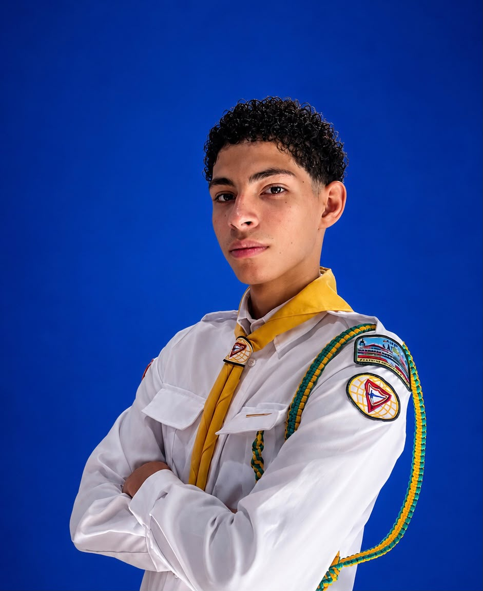

01
EPISÓDIO 01
Até Ele Vir
Nosso primeiro episódio. Assista agora no Instagram.
▶ Assistir no InstagramUMA MENSAGEM PARA ESTA GERAÇÃO
Levando esperança, fé e reflexão enquanto aguardamos a volta de Jesus.
Conheça nossa missãoO Até Ele Vir nasceu com um propósito: levar uma mensagem de esperança, fé e reflexão para esta geração.
Vivemos em um mundo cheio de distrações, dúvidas, escolhas e desafios. Por isso, queremos usar aquilo que temos — vídeos, criatividade e comunicação — para falar sobre aquilo que realmente importa.
Nosso desejo é alcançar especialmente os jovens, ajudá-los a refletir sobre suas escolhas e, acima de tudo, apontar para Jesus.
Porque enquanto esperamos, temos uma missão.
Duas pessoas, uma missão e um propósito: apontar para Cristo.

Parte da equipe responsável pela criação e desenvolvimento do Até Ele Vir.
Parte da equipe responsável pela criação e desenvolvimento do Até Ele Vir.
Histórias, reflexões e mensagens para fazer você parar, pensar e olhar para aquilo que realmente importa.
Nosso primeiro episódio. Assista agora no Instagram.
▶ Assistir no InstagramUma nova reflexão para esta geração. Assista agora no Instagram.
▶ Assistir no InstagramAté Ele Vir.
Acompanhe o Até Ele Vir pelas nossas redes sociais e compartilhe essa mensagem.